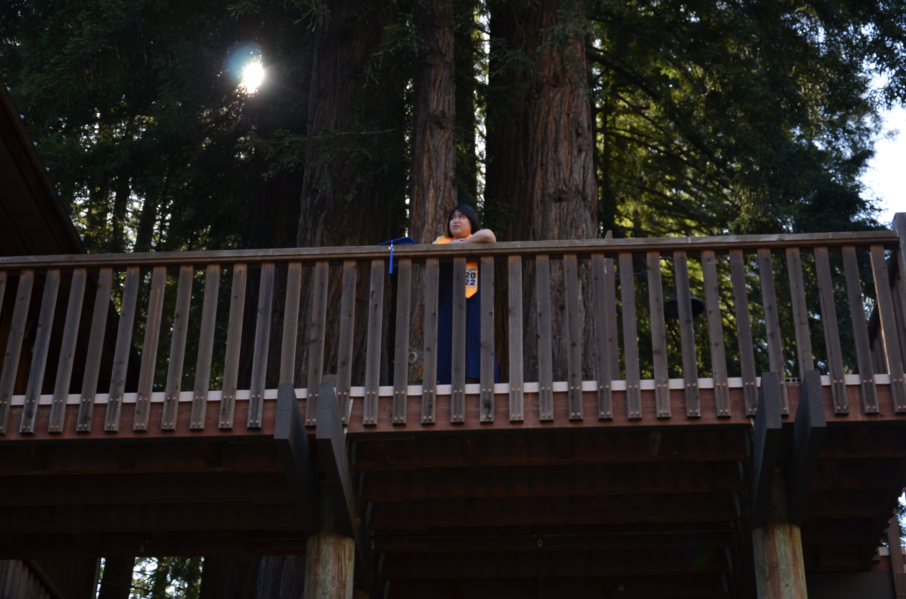

My name is Allyza Elnar, and I've been programming since I was a little kid!
It started on Neopets when I would make fonts for the message boards and edit my neopets' pages to host my fonts, their stories, and an extended about me.
That passion extended into my teen years when I would edit people's theme templates on Tumblr to customize my own blog, as well as enrolling in my high
school's computer science classes. In college, I majored in Computer Science at UC Santa Cruz where I found a love for teaching people how to code,
learning about artificial intelligence, and the art of visualizing data. My hope for the future is to continue programming and building bigger and better
things with code.
